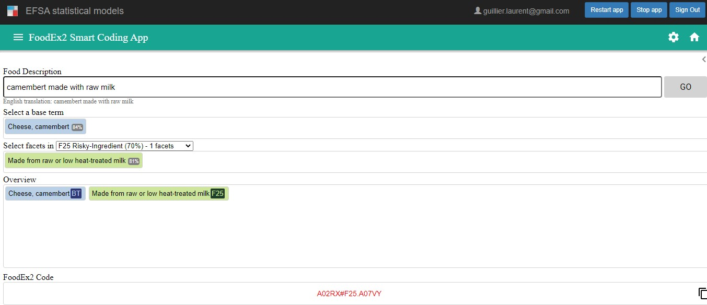
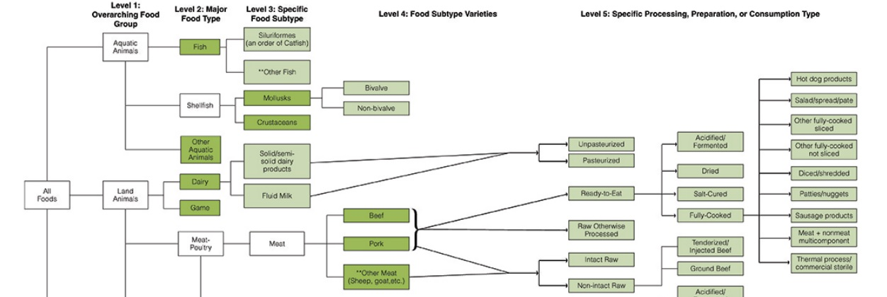

3 Foods

3.1 FoodEx2
3.1.1 Scope
In 2015, EFSA developed a food classification and description system called FoodEx2 ((EFSA) 2015), which is used for its data exchange with Member States. This system describes a large number of individual foods, grouped into food groups and broader food categories, classified using a formal hierarchical parent-child relationship (ontology). Most of the food names are generic, allowing the user to classify several similar foods under one name attached to a unique code. Facets” can be used to add details about the characteristics of the food. The current version of FoodEX2 has eight hierarchies: six pre-selected domain-specific food hierarchies based on an intended target use (exposure, zoonosis, veterinary residue, etc.). There is also a complete hierarchy (“Master hierarchy”), for terminology management, and a general hierarchy oriented towards data capture (“Reporting hierarchy”). The latter has been used to select the food categories of interest, providing a common repository of food descriptions. It comprises 10,366 terms divided into three broad categories, “Food”, “Feed” and “Non-food matrices”, up to 10 levels deep (hierarchy levels H1 to H10).
FoodEx2 also offers facets, which are used to add more detail to the information provided by the selected term in the food list. These facets are collections of additional terms describing the properties and aspects of the food from different angles. Thus, it is possible to provide information on the source of the food, the preservation process, the intended use, etc.
3.1.2 Accessibility
Latest Foodex2 version is available in Efsa knowledge junction in Zenodo (Authority 2022). The list of terms can be accessed by exploring the FOODEX.xlsx file or by using the catalogue browser. It’s is a Java-based application that allows to use and browse catalogues released by EFSA in the Data Collection Framework. The Food Standards Agency also provide an web-page allowing to navigate at the different levels of the FoodEx2 hierarchies: FSA_foodtype.
Another way to access FoodEx2 is to use the EFSA FoodEx2 Smart Coding Application. It can be accessed in the R4EU platform (users should register). The tool aims to simplify the coding process by making use of AI techniques. Starting from the food description given as input, the tool provides suggestion of complex FoodEx2 terms (combination of base term and facets). Figure 3.1 shows an example of use of EFSA-SCA.

3.2 IFSAC categorization schema
3.2.1 Scope
The IFSAC food categorization scheme (Richardson et al. 2017) has a multilevel structure (up to five distinct levels) to which foods can be assigned. The first level of the hierarchy defines four food groups (aquatic animals, land animals, plants, and other). Food groups then include increasingly specific food categories that are further subdivided into more specific categories Figure 3.2. The nature of the subcategories are established based of the food source or the process. The IFASC results in a total of 78 food categories.

3.2.2 Accessibility
The IFASC is accessible online: IFASC_groups.
Some adaptions of these scheme are available:
in GenomegraphR tool (Sanaa et al. 2019)
IFSAC+ categories have been recently proposed (Balkey et al. 2021). These categories are being used in ncbi see e.g. nbci_ex.